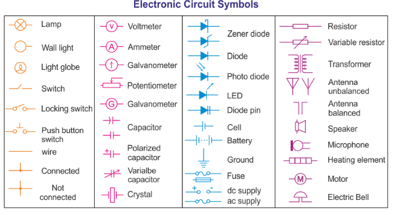

Introduction to Electric components and Circuits and ESP 32.
I. Electric components
Electric circuit definition.
An electric circuit is a closed-loop or path, forming a network of electrical components where electrons can flow.
This path is made using electrical wires and is powered by a source like a battery.
Electric circuits form the backbone of all electronic systems.
Components of Electric Circuits
The basic components of electric circuits include;
A voltage source
A load
A conductive pathway
A voltage source is an electrical component that supplies energy. It provides a potential difference for the charges to flow. Examples of voltage sources are a battery and a generator.
The load in a circuit is a device that uses electrical energy. A load can be a resistor, a light bulb, or a motor.
A conductive pathway provides a path for the current to flow and is used to connect the electrical components to each other and the power source.
More Components
Power Source : Provides the initial electrical energy to power the circuit.
Resistor:resistors are used to reduce current flow, adjust signal levels and to divide voltages.
Capacitor: Stores and releases electrical energy to filter noise and stabilize voltage.
Inductor: Stores energy in a magnetic field and smooths current flow in switching circuits.
Diode: Allows current to flow in one direction and blocks reverse current to protect the circuit.
LEDS(Red, Blue, Yellow): 3 mm LED Diodes Red Yellow Blue Green round LED Light Emitting Diode.
Push button : Feature momentary contact, 4 pins, round black push button, through hole mounting, 6 x 6 x 5mm size
Potentiometer(10k) :acts as a voltage divider
Bridge Rectifier: Converts AC input to DC using four diodes in a bridge configuration.
Transformer: Changes AC voltage levels and provides electrical isolation.
Fuse: Protects the circuit by breaking the connection if current exceeds a safe level.
Current Sensor / Shunt Resistor: Measures current flow for monitoring and protection purposes.
Power Switch: Controls the on/off state of power delivery in a circuit.

II. ESP 32 microcontroller
ESP 32 is a chip microcontroller with integrated Wi-fi and dual mode bluetooth